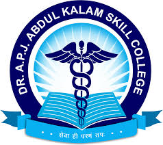

"A. P. J. Abdul Kalam"
Davangere,India


About
A.P.J. Abdul Kalam, known as the "Missile Man of India," was an Indian aerospace scientist and statesman who served as the 11th President of India from 2002 to 2007, and was celebrated for his contributions to India's space and missile program
Education
Bachelor's degree:
Physics from St.Joseph's College in Tiruchirapalli in 1954.
Master's degree:
Aeronautical Engineering from the Madras Institute of Technology in 1960.
Honorary doctorates:
He got doctrates From 48 universities and institutions around the world.
including Carnegie Mellon University.
the University of Sydney.
and the University of Waterloo.
Skills

- 
Projects
Hobbies
Playing the rudra veena
Poetry
Contact
- phone: +25252222
- Email: biet@gmail.com